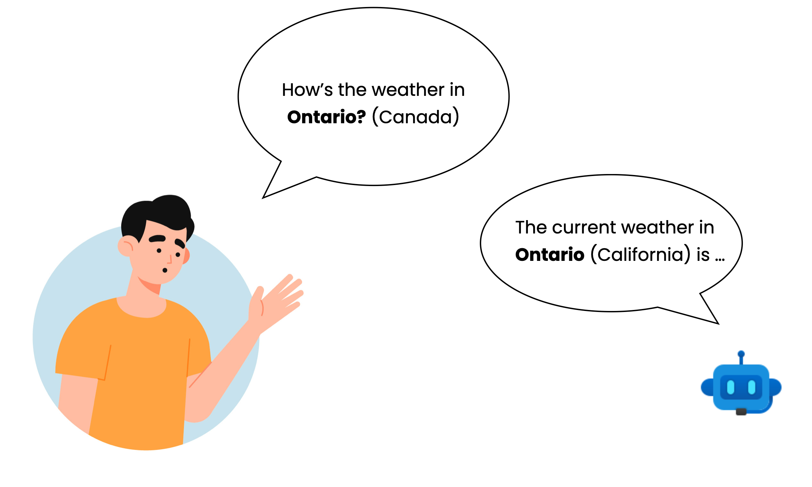

Planning for Natural Language Failures with the AI Playbook
{kind=link}

We all know that AI can dramatically improve the user experience of software products. But there are a lot of growing pains with AI and the current process for prototyping AI experiences is not as efficient as we want it to be. Product teams working with natural langauge AI products such as chatbots or writing assistants are experiencing major challenges because they are discovering unexpected errors after deploying the product to end-users. Based on a systematic characterization of common failure scenarios in natural language-based systems, we developed the AI Playbook to help product teams proactively address AI failures in early stages of prototyping.
- Project Date: Apr - Jul 2020
- Affiliations: Microsoft Research AI
- Funding: Microsoft
- Role: Study design, data collection, tool development, and paper writeup
- Collaborators: Adam Fourney, Derek DeBellis, and Saleema Amershi
Background

There are several reasons that challenge our ability to prototype AI experiences. First, many AI solutions are built on probabilistic machine learning models, and it is difficult to predict failure behaviors of a system. Moreover, design practitioners have varying levels of AI expertise to account for all types of AI failures. Finally, it's difficult to know how users will react to failures in realistic scenarios. So this leaves designers with no choice but to take a reactive approach to address errors in the prototyping process.
Suppose we are planning a trip and ask an AI assistant about the weather in Ontario (which is in Canada). Our assistant, however, might think we are talking about a city in California, which happens to carry the same name Ontario with the same spelling and pronunciation. So how can we help product teams anticipate failures of this nature?
Goal
The goal of this research is to understand how we can help product teams working on natural language products address AI failures early enough in the prototyping process.
Methods
- Semi-structured interviews with 12 practitioners (user researchers, designers, and program managers)
- Development of taxonomy of common AI failures in natural language products
- User study with 9 practitioners (prior participants)
We developed our taxonomy starting with 8 experts in NLP research, and collected our initial set of failures from previous work on information retrieval, dialogue management, speech recognition, and slot filling, etc. to capture a wide range of natural language scenarios. With this initial set of failures, we organized them based on failures that fall under attention, input perception, understanding, and response generation. We then did a second round of iteration by walking through concrete real-world examples of NL tasks for each scenario (like extracting a meeting request from an email, or booking a flight with a voice assistant, etc.). After this, we arrived at 16 different failure scenarios distributed across the attention, perception, understanding and response generation error categories.
Taxonomy of AI Failure Types and Scenarios
Under Construction...
Key Findings
Our formative interviews with practitioners from a large technology company revealed that, in addition to the challenges of anticipating AI errors, prototyping was often overlooked altogether or focused only on idealized scenarios for reasons including a lack of tools and limited time allocated to this stage of development.
Presentation & Demo

The HAX Playbook (previously AI Playbook) is an interactive tool for generating interaction scenarios to test when designing user-facing AI systems. Click the image for an interactive demo.